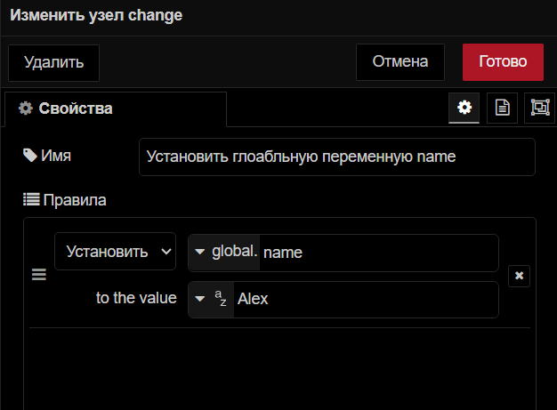
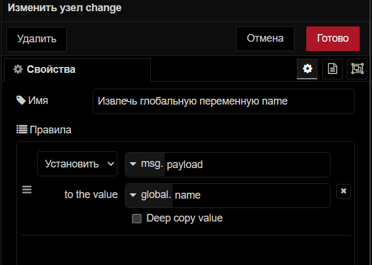
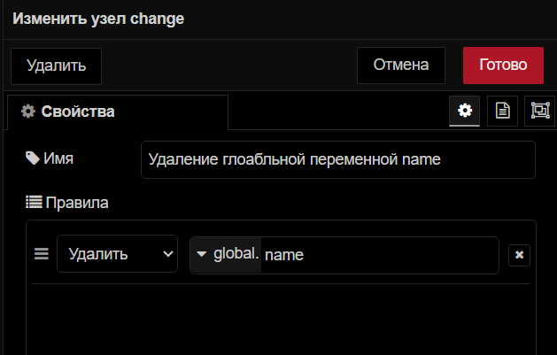
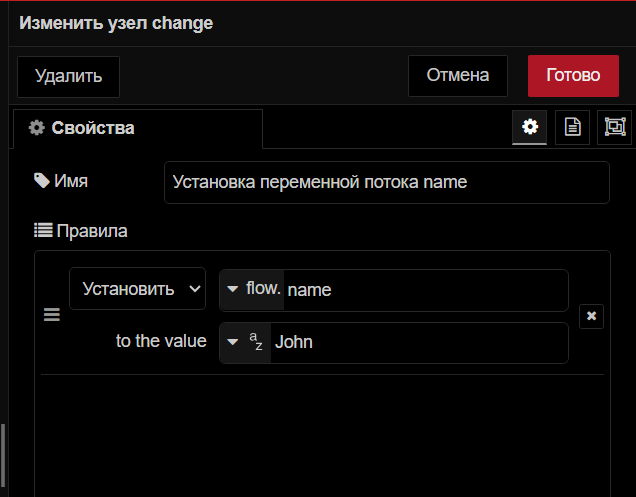
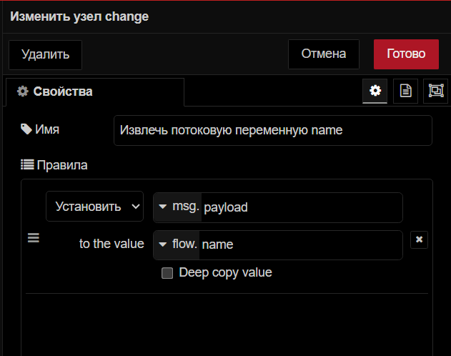
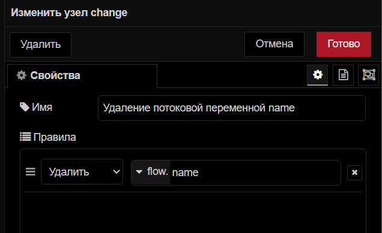
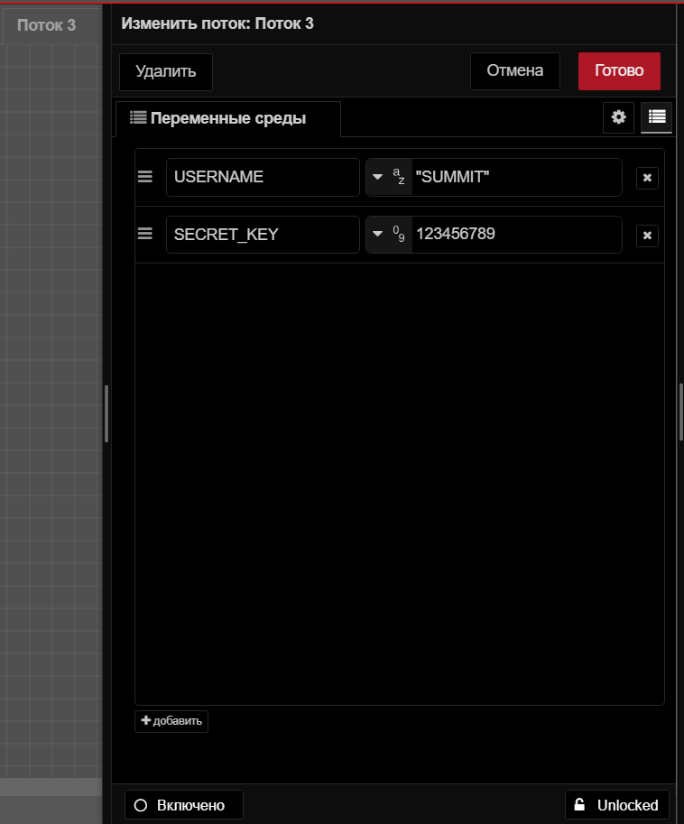
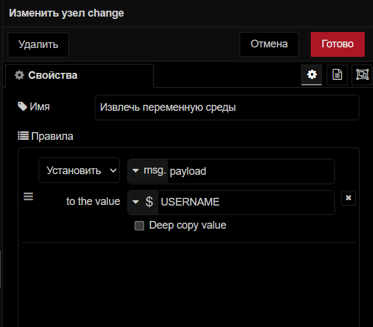

Понимание переменных Node, Flow, Global и Environment в U-Logic
U-Logic очень прост и не требует особых знаний в области кодирования. Несмотря на то, что U-Logic прост, некоторые термины, такие как global, flow и enviroment переменные, могут показаться на первый взгляд загадочными. Это руководство подробно рассмотрит переменные U-Logic, стремясь углубить ваши познания и при этом минимизировать усилия, необходимые для сбора информации.
Понимание переменных U-Logic
Переменные являются важной частью U-Logic. Они бывают разных типов, например, сообщения, контекста и переменные среды. Переменные контекста сообщений связаны с отдельными сообщениями по мере их перемещения по потоку. Переменные контекста используются для отслеживания состояния приложения, которое включает переменные узла, потока и глобальные переменные. С другой стороны, переменные среды хранят конфиденциальную информацию о конфигурации, например ключи API, предотвращая случайное раскрытие этих данных в потоке.
Изучение глобальных переменных
Глобальные (global) переменные в U-Logic доступны для функционирования, изменения, внедрения и переключения узлов в пределах данного экземпляра U-Logic. Они служат централизованной точкой хранения данных, к которым необходимо получить доступ из разных частей приложения. Это особенно полезно, когда вы хотите совместно использовать данные в нескольких потоках или вкладках в пределах одного экземпляра U-Logic.
Например, в системе домашней автоматизации с потоками для освещения, безопасности и климат-контроля глобальные переменные могут хранить пользовательские настройки или системные настройки, к которым все потоки могут получить доступ и которые могут обновлять. Это обеспечивает единообразное поведение во всей системе.
Инициирование/установка глобальной переменной
Мы можем задать глобальные переменные с помощью узлов function и change.
В узле change вы можете установить его, как показано на рисунке ниже.

Чтобы инициировать переменную потока в узле function, вам придется использовать метод set, как показано ниже в узле function:
global.set('variableName', value);
Извлечение глобальной переменной
Извлечение глобальных переменных с использованием узлов change, inject и switch довольно похоже. Вам просто нужно выбрать опцию «global» и ввести имя переменной в поле ввода. Ниже приведено изображение, показывающее, как можно извлечь глобальные переменные с помощью узла change:

Чтобы получить глобальную переменную с помощью узла function, используйте метод get, как показано ниже:
global.get('variableName');
Удаление глобальных переменных
Чтобы удалить глобальные переменные, вы можете использовать как вкладку «Контекстные данные», так и узел change. Ниже показано, как можно удалить глобальные переменные с помощью узла change:

Изучение переменных потока
Переменные потока (flow) доступны для узлов function, change, inject и switch. Это полезно для обмена данными в пределах определенного потока или вкладки, что позволяет осуществлять бесперебойную передачу данных между узлами в пределах одного потока.
Например, в системе мониторинга температуры у вас есть несколько датчиков, отправляющих данные на разные узлы в одном потоке. Вы можете использовать переменные потока для передачи текущих показаний температуры между узлами для обработки и анализа в этом конкретном потоке.
Инициирование/установка переменной потока
Мы можем задать переменные потока, используя узлы function и change.
В узле change вы можете установить его, как показано ниже.

Чтобы инициировать переменную flow с помощью узла function, вам придется использовать метод set, как показано ниже в узле function:
flow.set('variableName', value);
Извлечение переменной потока
Вы можете извлекать переменные потока, используя узлы function, change, inject и switch.
Извлечение переменных потока с использованием узлов изменения, инъекции и переключения довольно похоже. Вам просто нужно выбрать опцию «поток» и ввести имя переменной в поле ввода. Ниже представлено изображение, показывающее, как можно извлечь переменные потока с помощью узла изменения.

Чтобы получить переменную потока, с помощью узла function используйте метод get как показано ниже:
flow.get('variableName');
Удаление переменных потока
Для удаления переменных потока можно использовать как вкладку «Контекстные данные», так и узел change. Ниже показано, как можно удалить переменные потока с помощью узла change:

Изучение переменных узла
Переменные узлов (node) специфичны для каждого узла и видны только внутри этого узла. Это означает, что мы не можем читать или записывать в эту переменную извне узла, где она инициализируется. Это идеально подходит для случаев, когда вы хотите хранить данные, специфичные для одного узла, чтобы обеспечить изоляцию данных и предотвратить помехи с другими узлами
Например, вы хотите вставить отправленные данные в базу данных вместе с уникальным идентификатором для каждой отправки. Вы можете использовать переменную узла для хранения и отслеживания переменной счетчика в узле function.
Инициирование/установка переменной узла
Чтобы инициировать и задать переменную узла с помощью узла function, вам придется использовать метод set как показано ниже:
context.set('variableName', value);
Это действие устанавливает значение для контекстной переменной с указанным именем.
Извлечение переменной узла
Чтобы получить переменную узла с помощью узла функции, используйте метод get как показано ниже:
context.get('variableName');
Удаление переменных узла
Чтобы удалить переменную узла, вам нужно будет использовать опцию удаления на вкладке «Контекстные данные» в разделе «Узловой»
Изучение переменных окружающей среды
Переменные среды (enviroment) специально используются для хранения конфиденциальных данных конфигурации, таких как ключи API или учетные данные базы данных, гарантируя, что эта информация не будет напрямую раскрыта в ваших потоках. В U-Logic вы можете устанавливать переменные среды на уровне потока и на глобальном уровне.
Среда уровня потока: используется для хранения конфиденциальных данных конфигурации, доступных только в пределах определенного потока. Это обеспечивает безопасное и изолированное хранение конфиденциальной информации. Например, при создании многопоточного приложения U-Logic каждому потоку могут потребоваться разные детали конфигурации, такие как ключи API или уникальные идентификаторы. Использование переменных среды уровня потока позволяет каждому потоку безопасно хранить свои конкретные конфиденциальные данные, не подвергая их воздействию других потоков.
Среда глобального уровня: переменные используются для хранения конфиденциальных данных, доступных во всех потоках в экземпляре U-Logic. Они полезны, когда вам нужно поделиться одними и теми же конфиденциальными данными в разных потоках. Например, если нескольким потокам необходимо использовать один и тот же ключ API, установка переменной среды глобального уровня позволяет им безопасно получать доступ к этим данным, избегая повторных конфигураций и обеспечивая согласованность.
Установка переменных среды
Чтобы задать переменные среды уровня потока, вам придется использовать диалоговое окно редактирования потока.

Доступ к переменным среды
Доступ к переменным среды в узлах change, inject и switch можно получить, выбрав опцию «$ переменная среды» и введя имя переменной в поле ввода. Вот пример доступа к переменной среды с помощью узла change:

Чтобы получить доступ к переменным среды в узле function, используйте:
env.get('variableName');
В узле template вы можете получить к нему доступ следующим образом:
This is my username : {{env.USERNAME}}.
А если вам необходимо получить доступ к переменным среды в сторонних узлах конфигурации, где не предусмотрена возможность использования переменных среды, вы можете получить к ним доступ с помощью ${variableName}поля ввода узла.
Примечание
Если у вас есть переменные с одинаковыми именами, доступ к ним будет иметь приоритет над переменной уровня потока выше, чем по сравнению с переменной глобального уровня. Чтобы получить доступ к переменной среды глобального уровня в этом сценарии, вам нужно добавить префикс к имени переменной с помощью „$parent“
Удаление переменных среды
Чтобы удалить добавленные переменные среды, вы можете использовать тот же интерфейс, в котором они были добавлены. В правом углу добавленной переменной среды вы увидите крестик. Просто щелкните по нему, чтобы удалить переменную и перезапустить экземпляр U-Logic.
Вкладка «контекст»
U-Logic предоставляет специальный интерфейс для просмотра и управления всеми переменными U-Logic. Перейдите на вкладку «контекст» боковой панели, где вы найдете разделы для узловых, потоковых и глобальных переменных. В каждом разделе есть значок обновления в правом верхнем углу; щелкните по нему, чтобы увидеть последние или недавно добавленные переменные.
На этой вкладке вы также найдете информацию о том, когда каждая переменная была установлена или обновлена, а также дополнительные опции справа от каждой переменной. Первая опция позволяет вам скопировать имя переменной, вторая опция позволяет вам скопировать значение переменной, третья опция обновляет переменную, чтобы показать самое последнее значение, а четвертая опция позволяет вам удалить переменную.
Заключение
В этом всеобъемлющем руководстве мы изучили основные концепции переменных U-Logic, включая переменные узла, потока, глобальные переменные и переменные окружения. Мы узнали, как эффективно инициировать, извлекать и управлять этими переменными, используя как узлы function, так и узлы change.